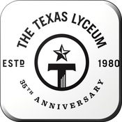
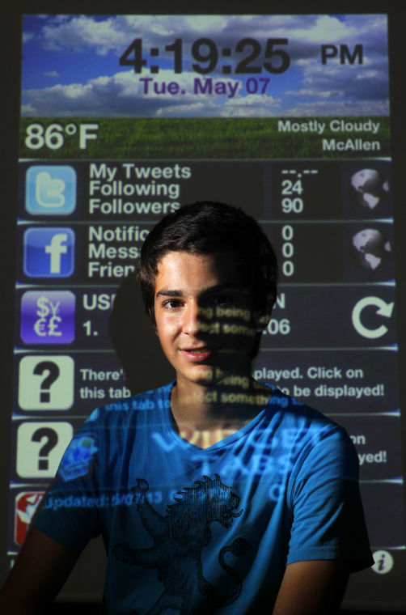

×
Application Development
January 2011 - Present
Overview
Ever since I discovered my passion for programming, developing iOS applications became an enjoyable hobby. I have since published 4 applications on the app store and am currently working to complete my 5th. Cumulatively, all my applications have been downloaded over 30,000 times.
Experience
I discovered my passion for programming when I was first introduced to it in 8th grade (2011). One of my dad’s friends, who is a computer scientist, noticed my fascination for technology and offered to build an app with him for iOS. With much excitement at the thought of learning a skill that would allow me to build any application that I could use on my phone, I accepted his offer without hesitation. We began to work on a calculator application for the iPad because when the iPad first came out in 2010, it did not come with a calculator. Developing the calculator was a life changing experience that instilled a sincere passion for programming. I became fascinated by the challenge of analyzing a situation or process to identify areas for improvement, employing creativity to develop a software solution, and publishing the software to make it readily available to billions of users worldwide. I then realized that programming is not just a tool - it is a platform for enacting meaningful change.
I have since developed and published 3 additional applications on the app store. Here is a brief description on each.
iCalculator Pro | June 2011 - January 2012
After developing the first calculator application with my dad’s friend, which only had basic adding, subtracting, multiplication, and division functions, I decided to develop a calculator with advanced scientific functionality. Taking what I had learned from the first calculator and furthering my understanding of programming by watching video tutorials and reading application development books, I managed to develop a scientific calculator with customizable themes.
Widgets In Tabs | September 2013 - March 2014
Widgets in Tabs is an application that was built for a personal project in high school, where students were allowed to build or do anything that would require significant time investment and end up with a final product. The concept of widgets in tabs is to have a place where you could see all the information you need in one place. For example, on a daily basis, most of us check Facebook, Twitter, email, and many other things. Widgets in Tabs provides 5 different tabs in which you can chose to display a widget (Facebook, Twitter, email, or currency exchange). Each of these widgets would display the most important information from that widget. For example, Facebook would tell you how many new notifications and messages you have. As a result of developing Widgets In Tabs, I made the headline of my local newspaper in McAllen, TX.
Texas Lyceum | June 2014 - February 2015

After discovering me through a McAllen ISD board meeting that mentioned my name for the development of Widgets In Tabs, Susan Valverde, a member of the Texas Lyceum, contacted me to develop an application for an upcoming meeting the Texas Lyceum was having in McAllen. I worked collaboratively with Susan to plan out the layout of the application and to ensure that the application was up to her standards of quality. The app was a successful hit at the meeting and the Texas Lyceum contracted me two additional times to develop applications for their quarterly meetings.
